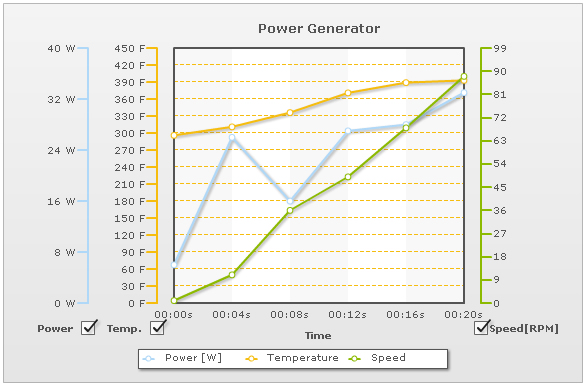

| Multi-axis Line Chart |
The Multi-axis Line chart from PowerCharts XT pack is an interactive line chart that allows for the following features:
Shown below is a simple Multi-axis line chart, with three defined axes: |
|  |
As you can see above, you can select or clear either of the three axis. Upon unchecking an axis, the data lines pertaining to that axis would hide from the chart.
<chart caption='Power Generator' xAxisName='Time' showValues='0' divLineAlpha='100' numVDivLines='4' vDivLineAlpha='0' showAlternateVGridColor='1' alternateVGridAlpha='5'>
<categories>
<category label='00:00s' />
<category label='00:04s' />
<category label='00:08s' />
<category label='00:12s' />
<category label='00:16s' />
<category label='00:20s' />
</categories>
<axis title='Power' titlePos='left' tickWidth='10' divlineisdashed='1' numberSuffix='W'>
<dataset seriesName='Power [W]' >
<set value='6' />
<set value='26' />
<set value='16' />
<set value='27' />
<set value='28' />
<set value='33' />
</dataset>
</axis>
<axis title='Temp.' titlePos='left' numDivLines='14' tickWidth='10' divlineisdashed='1' numberSuffix='F' >
<dataset seriesName='Temperature'>
<set value='296' />
<set value='311' />
<set value='336' />
<set value='371' />
<set value='389' />
<set value='393' />
</dataset>
</axis>
<axis title='Speed[RPM]' titlepos='RIGHT' axisOnLeft='0' numDivLines='10' tickWidth='10' divlineisdashed='1'>
<dataset seriesName='Speed'>
<set value='1' />
<set value='11' />
<set value='36' />
<set value='49' />
<set value='68' />
<set value='88' />
</dataset>
</axis>
</chart>
{
"chart":{
"caption":"Power Generator",
"xaxisname":"Time",
"showvalues":"0",
"divlinealpha":"100",
"numvdivlines":"4",
"vdivlinealpha":"0",
"showalternatevgridcolor":"1",
"alternatevgridalpha":"5"
},
"categories":[{
"category":[{
"label":"00:00s"
},
{
"label":"00:04s"
},
{
"label":"00:08s"
},
{
"label":"00:12s"
},
{
"label":"00:16s"
},
{
"label":"00:20s"
}
]
}
],
"axis":[{
"title":"Power",
"titlepos":"left",
"tickwidth":"10",
"divlineisdashed":"1",
"numberSuffix":"W"
"dataset":[{
"seriesname":"Power [W]",
"data":[{
"value":"6"
},
{
"value":"26"
},
{
"value":"16"
},
{
"value":"27"
},
{
"value":"28"
},
{
"value":"33"
}
]
}
]
},
{
"title":"Temp.",
"titlepos":"left",
"numdivlines":"14",
"tickwidth":"10",
"divlineisdashed":"1",
"numberSuffix":"F"
"dataset":[{
"seriesname":"Temperature",
"data":[{
"value":"296"
},
{
"value":"311"
},
{
"value":"336"
},
{
"value":"371"
},
{
"value":"389"
},
{
"value":"393"
}
]
}
]
},
{
"title":"Speed[RPM]",
"titlepos":"RIGHT",
"axisonleft":"0",
"numdivlines":"10",
"tickwidth":"10",
"divlineisdashed":"1",
"dataset":[{
"seriesname":"Speed",
"data":[{
"value":"1"
},
{
"value":"11"
},
{
"value":"36"
},
{
"value":"49"
},
{
"value":"68"
},
{
"value":"88"
}
]
}
]
}
]
}
Also, if you click on any axis that is not the primary or secondary axis (the first left or first right axis from canvas), for example, "Power" axis in the above chart, it will animate and exchange places with the "Temperature" axis, so as to form the primary axis. If you do not want your users to be able to select visible axes, you can set: <chart ... allowSelection='0' ...> Or, if you want to disallow dynamic shifting of axes (upon clicking), you can set: <chart ... allowAxisShift='0' ... > To make an axis imaginary, you can set: <axis showAxis='0' ..> This axis would not show on the chart now. But any datasets plotted against this axis would show. Since the axis would not show on the chart, even the checkbox for the axis won't show up. This feature can be used when you want particular data-sets to be always visible on the chart, so that the user cannot show or hide it. To position an axis on the right side of canvas, you can set: <axis axisOnLeft='0' ..> |